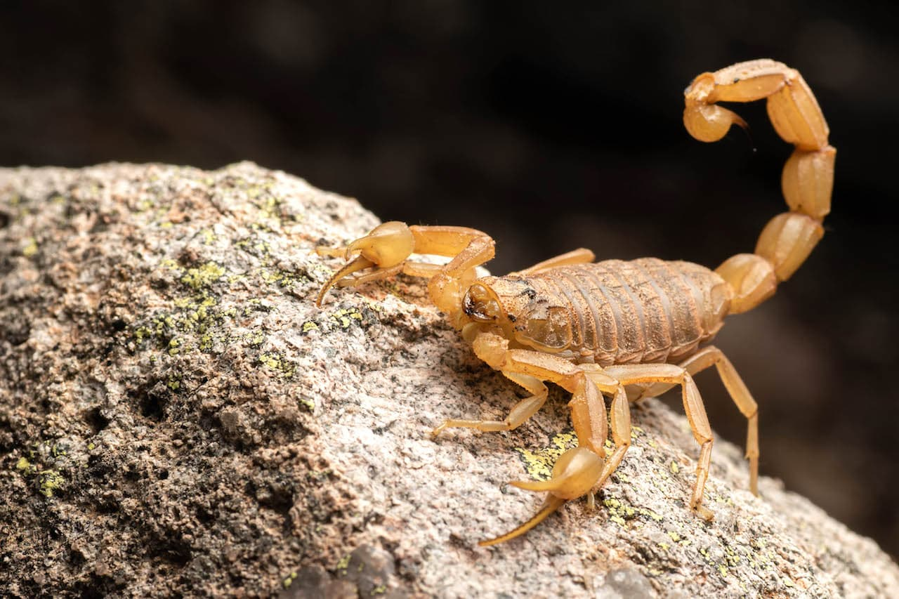

Scorpion 5#
Health: Health guides how to prevent the proliferation of scorpions - Agência Estadual de Notícias Human deaths per year: about 3,250 Greatest danger: venom sting There are some scorpions more venomous than others. In Brazil, one of the species that poses the most risk to people is the black-tailed scorpion, causing respiratory arrest with its sting. Because they are small and hide in dark places, accidents with these animals are common.